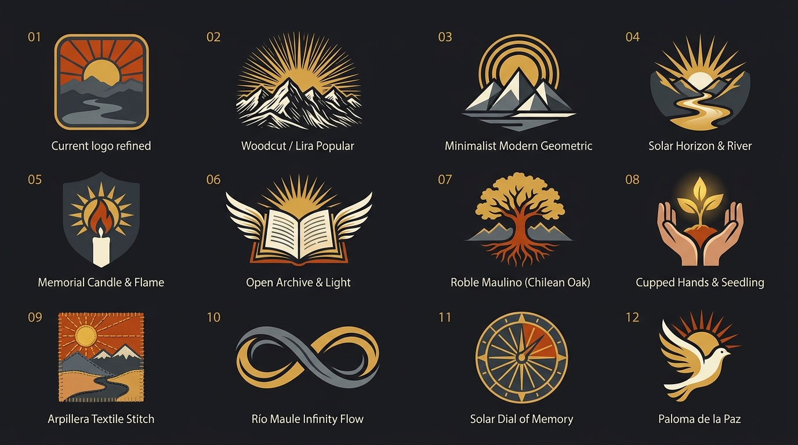
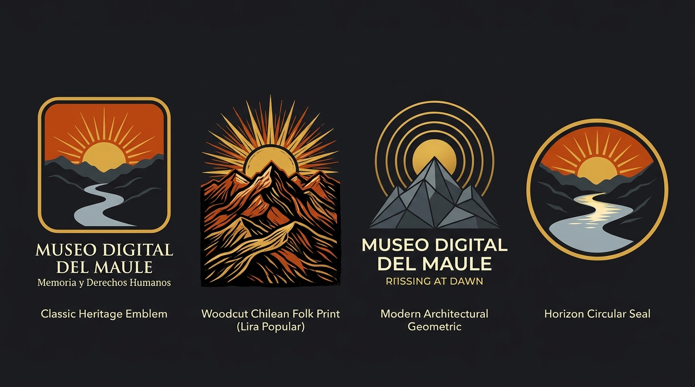
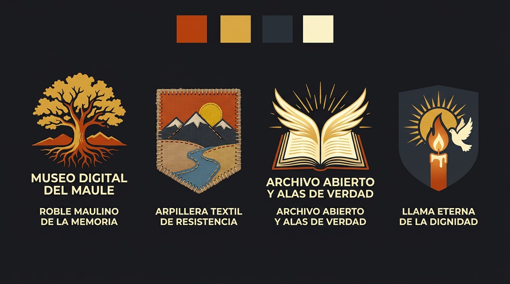

Museo Digital del Maule de la Memoria y los Derechos Humanos
Catálogo de 12 propuestas de identidad visual generadas con asistencia de IA y diseño vectorial. Las opciones 1, 2, 3 y 4 exploran variaciones directas del logotipo vigente (sol sobre la cordillera).
Lámina Maestra: Grilla de las 12 Opciones de Logotipo

Detalle: 4 Variaciones del Sol Naciente y la Cordillera (Eje del Logo Actual)

Detalle: 4 Conceptos Simbólicos y Territoriales (Roble, Arpillera, Archivo y Llama)

Fichas de las 12 Opciones
1. Sol sobre la cordillera (Clásico)
Amanecer terracota (#c2410c) tras los cerros del Maule con borde dorado: verdad, luz y esperanza.
★ Base Actual Implementada
2. Sol, Cordillera y Río Maule
Variación del logo actual sumando la curva del río Maule al pie de la cordillera.
Variación del actual
3. Sol Facetado & Lira Popular
Variación del actual en grabado xilográfico inspirado en las publicaciones populares.
Variación del actual
4. Medalla Circular del Horizonte
Variación circular del logo actual ideal para sellos patrimoniales y documentos oficiales.
Variación del actual
5. Roble Maulino de la Memoria
Árbol nativo de raíces profundas: arraigo de la tierra y vida que resiste.
6. Vela de Vigilia y Resistencia
La vela comunitaria de los familiares de detenidos desaparecidos: la luz de la verdad.
7. Archivo Testimonial Abierto
El libro-expediente abierto a la comunidad: memoria activa y derecho a saber.
8. Arpillera Bordada Maulína
Técnica textil con pespuntes visibles: el dolor y la esperanza cosidos a mano.
9. Tres Ondas del Río Maule
Cordillera, valle y mar unidos por un mismo cauce intergeneracional de memoria.
10. Semilla y Manos Protectoras
La semilla campesina del surco: el legado que cuidamos para las futuras generaciones.
11. Pin-Llama Cartográfico
El marcador del mapa regional convertido en llama de vigilia en cada comuna.
12. Paloma de la Paz y Derechos Humanos
Vuelo de paloma sobrevolando la geografía maulina: garantía de no repetición y verdad.